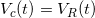
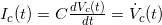
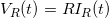
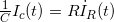
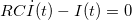
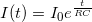
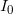

If you're interested in electronics, you'll find the following simple "paradox" amusing. It's the usual case of "proving that 2+2=5". The fun is finding where the mistake in the reasoning is.
Consider the following circuit:

Assume that the capacitor is charged to some initial voltage before the switch is closed. At time 0, the switch is closed. What is the current in the circuit as a function of time ?
Let's solve it using the familiar RC circuit methods. We know that  because of Kirchoff's voltage law. We'll differentiate both sides by time:
$\dot{V}_{c}(t) = \dot{V}_{R}(t)$
We know that for a capacitor, the relation between current and voltage is:

Substituting it into the equation above and also recalling that , we get:

But the current through the capacitor and resistor is the same current, so this can be rewritten simply as:

This is a simple first order differential equation, the solution of which is:

For some initial current . But wait a second, how can the exponent be positive, won't it grow to infinity with time ? There's obviously a mistake here, somewhere. Can you find it ?
This problem gave me some headache last night, and today I've successfully stumped a few co-workers with it. I'll post a solution in a couple of days.